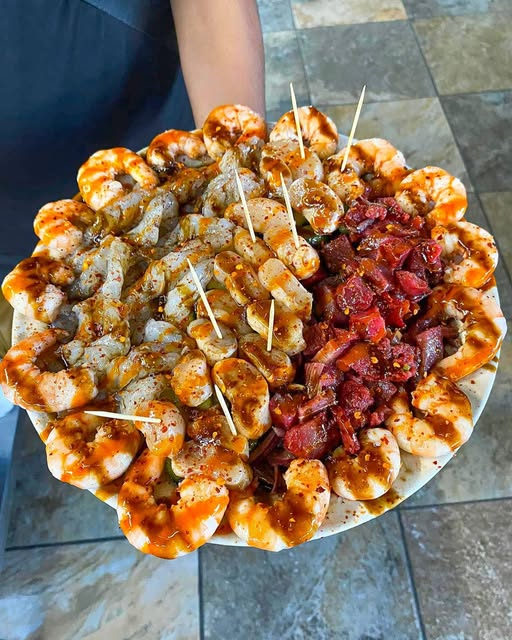
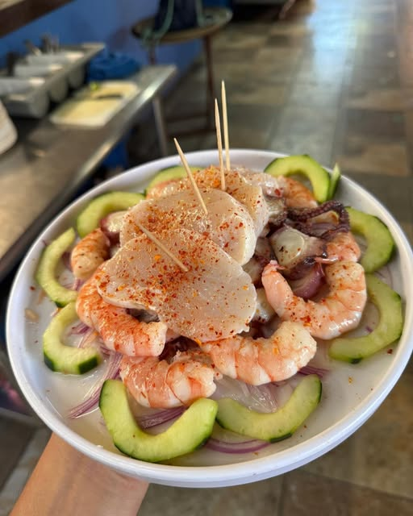
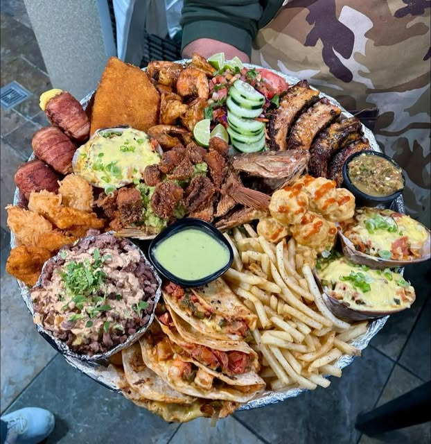
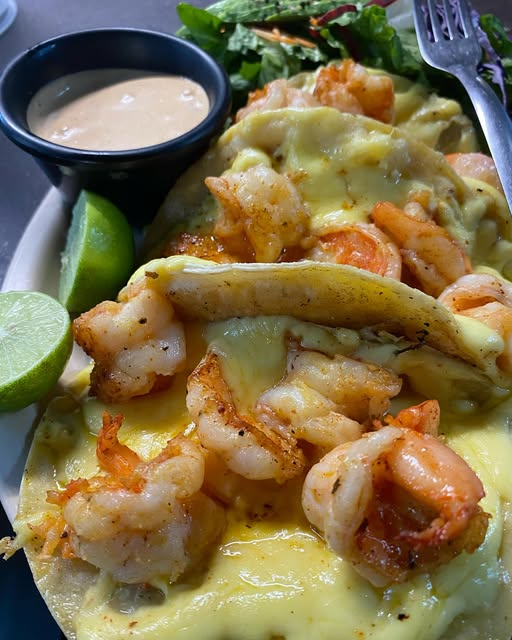

“Mariscos frescos, buena atención, ambiente agradable”
Ariel Gutierrez Google · hace 8 meses al consultar
EL MANGLITO · LA PAZ
Mariscos sudcalifornianos.
Ese toque sinaloense.
Una mesa que se disfruta sin prisa.

ENTRE LA BAJA Y SINALOA
En El Manglito, La Paz, El Maviri reúne la cocina sudcaliforniana con el toque sinaloense que anuncia en su perfil oficial. Una identidad que se vive alrededor de la mesa.
Encuéntranos en calle Colima, entre Abasolo y Topete, a un costado de Plaza Náutica.
Conoce nuestras redes ↗Fundadores, fecha de apertura y trayectoria pendientes de una fuente verificable. No se han atribuido nombres ni antecedentes sin confirmar.
03 / ESPECIALIDADES
Una mirada a las fotografías
de nuestro Instagram oficial.



Fotografías de nuestras redes oficiales. Explora las especialidades de la carta a continuación.
04 / GALERÍA
05 / LO QUE DICEN EN GOOGLE
“Mariscos frescos, buena atención, ambiente agradable”
Ariel Gutierrez Google · hace 8 meses al consultar
“Delicioso y suuuper basto.”
Carlos Tamez Google · hace 3 meses al consultar
“Poco sabor, mucha cantidad. Ideal para llenar el estómago, no para el paladar.”
Karina Google · hace 4 meses al consultar
Extractos de opiniones reales, con su valoración original. La calificación puede cambiar.
Leer todas las opiniones en Google ↗06 / UBICACIÓN & CONTACTO
TE ESPERAMOS
Horario publicado en Google Maps. Confirma por teléfono los días festivos.